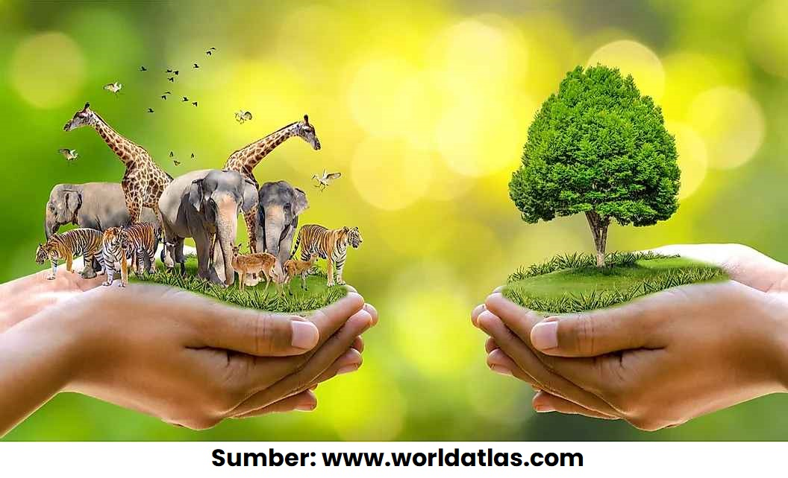

Upaya Pelestarian Keanekaragaman Hayati
Menurunnya keanekaragaman hayati menyebabkan semakin sedikit pula manfaat yang diperoleh manusia. Oleh karena itu perlu adanya penanganan untuk melestarikan keanekaragaman hayati, yang mana upaya ini disebut Konservasi.
Next Slide >>
Tujuan Dilakukannya Konservasi
- Menjamin kelestarian fungsi ekosistem sebagai penyangga kehidupan.
- Mencegah kepunahan spesies yang disebabkan oleh kerusakan habitat & pemanfaatan yang tidak terkendali.
- Menyediakan sumber plasma nutfah untuk mendukung pengembangan dan budidaya kultivarkultivar tanaman, pangan, obat-obatan maupun ternak.
Next Slide >>
Konservasi In Situ
Konservasi In Situ adalah upaya pelestarian
yang dilakukan di dalam habitat aslinya.
Contohnya
adalah sebagai berikut:
Next Slide >>
Konservasi Ex Situ
Konservasi Ex Situ adalah upaya pelestarian
yang dilakukan di luar habitat aslinya.
Contohnya
adalah sebagai berikut:
Next Slide >>
Tugas 6
Halo! masih ingat tugas yang telah diberikan sebelumnya
(tugas 4)?
Nah sekarang buka kembali link artikel berita yang telah
kamu pilih, kemudian identifikasi:
- Permasalahan apa yang terjadi pada berita tersebut?
- Apa dampaknya terhadap keanekaragaman hayati di sekitar tempat tersebut?
- Menurutmu upaya apa saja yang dapat dilakukan untuk melestarikan keanekaragaman hayati?
Buatlah jawaban anda dalam bentuk poster digital, Anda bisa menggunakan web editor seperti Canva, Figma dll